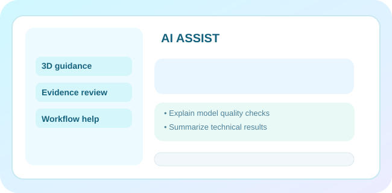

Nächste Termine
Kalender öffnenLokale Termine werden gelesen …
Eine durchdachte Arbeitsumgebung für moderne Kieferorthopädie: 3D-Modelle prüfen, den Materialbestand vorausschauend planen, das Team koordinieren und jede technische Entscheidung dokumentieren. Eine Oberfläche. Klare Verantwortlichkeiten.
Entwickelt von Mounir Akarkach für Herrn Dr. med. dent. Ibrahim Akarkach.NEU / DEIN TECHNISCHER ARBEITSTAG
Lokaler Arbeitsstand wird geladen … · ausschließlich geräteeigene Testdaten
Lokale Termine werden gelesen …
Technische Hinweise werden zusammengestellt …
Lokales Journal wird geladen …
Offene Aufgaben, aktuelle Termine, Materialhinweise und technische Worker-Ereignisse erscheinen gemeinsam – ausschließlich aus tatsächlich gespeicherten lokalen Testdaten.
Tagescockpit öffnen →
Lokale IndexedDB, begrenzte Worker, verschlüsselte Sicherungen und Transfer auf andere Geräte. Keine Anmeldung bei Supabase.
Nur die wichtigsten Wege zuerst. Weitere Werkzeuge bleiben einen Klick entfernt.
Datenbank, Verschlüsselung, Worker, Offlinefähigkeit und Schnittstellen automatisch überprüfen. Ergebnisse lokal als JSON exportieren.
Stelle Fragen, starte lokale, begrenzte Worker-Analysen, beobachte Herzschläge und Ergebnisse und bereite Aufträge zur Freigabe vor. Eigener Mitarbeiterbereich und lokaler Teamchat inklusive.
PIGA Control & Chat öffnen → Ohne Anmeldung für synthetische Testdaten · medizinische und physische Aktionen bleiben geschützt
Aus Inventur und Mindestbestand wird eine Einkaufsliste. PIGA legt einen Freigabeentwurf an – ohne deine Zustimmung Geld auszugeben.
Auftrag erfassen, STL technisch prüfen, Materialbestand sehen, Aufgaben koordinieren und die Übergabe dokumentieren – im selben lokalen Datenbestand, ohne erneute Eingabe.
Durchgängigen Laborauftrag starten → Lokale technische Evaluation · PIGA Gate 2 bleibt BLOCKWLAN prüfen, Bluetooth verbinden, STL-Dateien importieren und ein Testmodell durchspielen.
Mitarbeiterkonten, Kennungen, Zeiterfassung und Inhaberübersicht.
STL-Import, Modellsicht, Basismetriken und lokale Dateiprüfung.
Eigene Materialdaten, Bestandsbuchungen, Bedarfsprognosen, Warnungen und Bestellvorschläge.
KFO-Prüfschritte, Mitarbeiteraufgaben und BEMA-Katalog.
Zwölf Phasen von der Fallanlage bis zum nachprüfbaren Ergebnis.
Praktische Funktionen ohne Patientendaten oder externe Druckeraktion.
Wählen Sie eine synthetische STL-Datei aus. Format, Dreiecke, Dateigröße und SHA-256 werden lokal untersucht.
Schrittweises Prüfen vor einer gesonderten manuellen Druckfreigabe. Kein automatischer Druckstart.
Die Ablaufkarte führt durch den dokumentierten technischen Prozess. Medizinische Planungsfunktionen, die noch nicht validiert sind, werden nicht als produktiv ausgegeben.